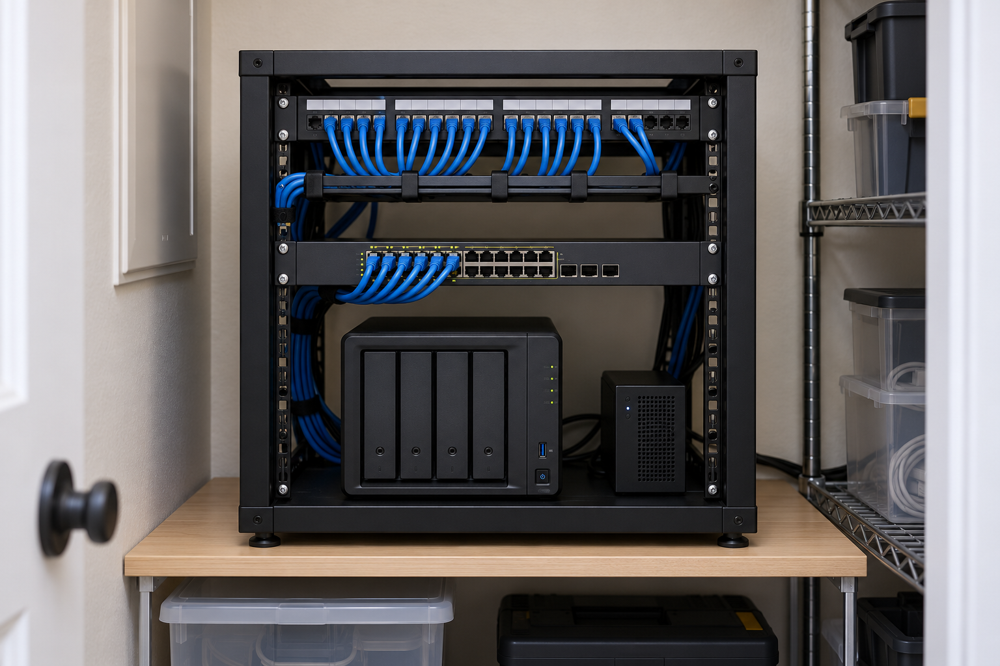

Project
Mijn netwerkproject

Doel van het project
Beschrijf hier de opdracht en leg uit wat je wilde bereiken.
Mijn aanpak
- Beschrijf hoe je het project voorbereidde.
- Leg uit welke onderdelen je configureerde.
- Beschrijf hoe je de werking testte.
Resultaat
Beschrijf hier wat het uiteindelijke resultaat was en of je doel bereikt werd.
Wat heb ik geleerd?
Leg uit wat je geleerd hebt en wat je bij een volgend project anders zou aanpakken.